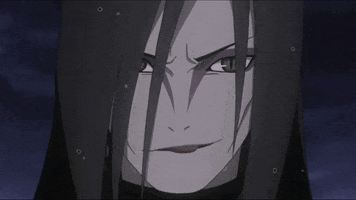

만화 나루토의 등장인물로 "나루토 1부의 최종 보스"였으며, 자부자와 하쿠 다음으로 중급닌자 시험이 시작되고 등장한 악역이다. 지라이야와 츠나데와 함께 3대 호카게인 사루토비 히루젠의 제자이며,
제2차 닌자대전에서 활약해 당시 비 마을의 수장이었던 도롱뇽 한조에게 전설의 3닌자라는 칭호를 얻었다.
전설의 3닌자 중 가장 처음으로 작중에서 등장했으며 주로 뱀을 소환하는 술법을 사용하거나 자신의 신체 부위를 늘려 싸운다.
그 특유의 사이코패스같은 성격과 잔인함으로 1부에서 가아라와 함께 가장 압도적이고 무서운 포스를 보여준 인물이다.
나름 최고참 주요 악역인지라 마지막에는 재우가 무척 좋다. 뒷 내용은 스포일러니 주의. 불노불사, 빵빵한 돈줄에, 최고의 실험체 과 최고의 실험실,
전쟁이 일어나거나 납치를 당해도 제 몸 하나 건사할 수 있을 힘까지 손에 넣어 모든 과학자들이 원하는 완벽한 조건을 손에 넣었고 두 아들을 만들어 키우고,
부모 대접 받는 등 그야말로 최후의 승자. 심지어 캐릭터 상품인 닌자 카드로 출시되어 카드에 싸인을 받으러 오는 하급 닌자들도 존재한다. 국내에서 주로 불리는 별명은 오롱이.

| 닌자 등록번호 | 002300 |
| 생일 | 10월 27일(전갈자리) |
| 나이 | 50세 → 54세(질풍전) → 70-71세(보루토: 나루토 더 무비) |
| 신장 | 177cm |
| 체중 | 63.9kg → 57.3kg |
| 혈액형 | B형 |
| 닌자 학교 졸업 | 6세 |